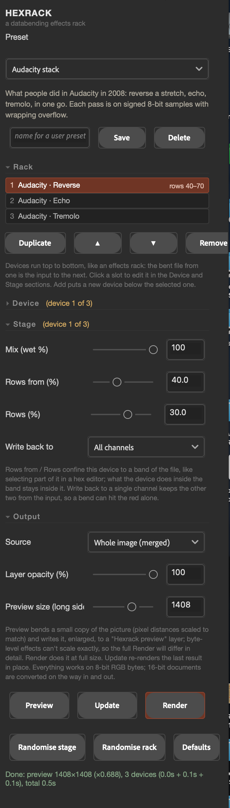

16
hexrack
A databending effects rack: the picture becomes a file, a chain of devices damages the file in the ways hex editors, text editors, codecs and Audacity really do, and the file becomes a picture.

about
Databending is editing an image's bytes rather than its pixels, and its whole look comes from the mechanics of whichever program did the damage. Hexrack does each of those for real instead of imitating the result: the layer is turned into a raw RGB byte stream, and every device in the rack either edits that stream directly (shift, cut and paste, find and replace, insert and delete, bit ops, stutter, bit rot, the text-editor accidents, wrong-header reinterpretation, the Audacity import trick) or encodes it into a real file format, damages the encoded bytes and decodes them again (a baseline JPEG encoder with a libjpeg-style forgiving decoder; PNG scanline filters). Palette abuse and pixel sorting round it out. Devices run top to bottom like an Ableton effects rack - up to eight, each with on/off, wet/dry mix, a band of rows it is confined to, a channel it writes back to, and its own seed - so formats that are never chained in practice can be. Everything is read and written through the UXP Imaging API and processed in JavaScript, as Pixachron is.
- app
- photoshop
- type
- uxp panel
- built by
- claude
- state
- built, untested in photoshop
- version
- 1.1.0
- requires
- Photoshop 24.2+, RGB, 8 or 16-bit (processed as 8-bit)
- plugin id
- com.simonmorse.hexrack
- folder
- Hexrack-Photoshop-Plugin
quick start
- 01Open Plugins › Hexrack. Choose a preset - Bent JPEG, WordPad and Hex editor shift are the three classics - and press Preview. A "Hexrack preview" layer appears at the top of the stack.
- 02Previews bend a reduced copy, so byte-level effects can't scale exactly: the full Render will differ in detail (the picture is a different file at a different size). Treat the preview as a sketch.
- 03Click a slot in the Rack to edit it; the Device section is that slot's device and parameters, the Stage section its mix, row band and channel. + Add puts a new device below the selected one; ▲ ▼ reorder; On mutes a slot without removing it.
- 04Randomise stage rolls the selected slot; Randomise rack builds a whole new rack of two to four devices. New beside Seed re-rolls only the random choices inside the current device.
- 05Save a rack you like with a name in the box and Save; it joins the preset menu under your presets. Racks also survive restarts on their own.
- 06The preset menu has three type groups (subtle, medium, extreme: 30 presets designed on black-on-white lettering, from a print-style misregistration to a skyline of collapsed ink). Note that pixel sorting does nothing inside solid letters - identical pixels sort to themselves - so the type presets use whole-line sorts instead of thresholds.
controls
hex devices
Edits on the raw byte stream, exactly as a hex editor would make them. Where an edit changes the file's length, Fill the end with says what fills the gap (wrap the stream round, untouched source bytes, the last byte repeated, zeros, 0xFF, noise).
- Shiftpx, rows, extra bytes
- Slides the whole stream. Whole pixels move the picture sideways and wrap onto the next row; rows move it down; 1 or 2 extra bytes rotate the colour channels (the classic databent colour cast).
- Cut & pasteblock start %, length %, paste at %, blocks
- Move, copy-insert, overwrite, swap or delete a block of the file. More than one block picks seeded random positions.
- Find & replacefind, tolerance, replace, probability
- Replace, swap, add, XOR, delete, insert-after or duplicate every byte near the Find value, optionally only in one channel's bytes.
- Insert & deleteevery (px), jitter, bytes per edit
- Adds or removes a few bytes at intervals: a staircase shear, drunk with jitter. Inserted bytes can repeat what came before, be a fixed value, random or zero.
- Bit opsmask, bit, probability
- XOR / AND / OR / add / subtract / rotate / swap nibbles / reverse bits / flip, set or clear one bit / NOT, on every byte or a random share.
- Stutterstutters, run length, repeats, shrink
- A stuck buffer: runs of bytes repeated over and over, overwriting what follows or inserted so everything after shifts.
- Bit rotdamaged bytes per 10,000, burst length
- In-place decay: flipped bits, noise, zeros, 0xFF, held bytes or inversions, singly or in bursts.
text editor
- Accidentmenu
- WordPad (0A → 0D 0A), Windows and Unix and Classic Mac line-ending conversions, tab expansion and its reverse, Latin-1 → UTF-8 (every byte over 127 becomes two: the bright half of the picture stretches), UTF-8 → Latin-1, trailing-whitespace trim, null-run collapse, 7-bit strip, UPPER/lowercase, a BOM.
- Probability0-100%
- How many of the matching bytes get the treatment. UTF-8 at 100% is pure static; 5-30% is the range.
reinterpret
The same bytes read back with the wrong header.
- Width error±px
- The classic diagonal weave: every row starts a little early or late.
- Bytes per pixel1 / 2 / 3 / 4 / 6
- 4 treats every fourth byte as alpha and loses it, so the colours cycle across the picture.
- Bit depth8 / 16 LE / 16 BE / 4 / 1
- 16-bit reads pairs of bytes as one sample and stretches the picture; 1-bit reads eight pixels from every byte.
- Layoutinterleaved / planar / planar per row
- Planar expects all the reds, then the greens, then the blues: three ghost copies stacked down the frame.
- Channel order, start offsetRGB…BRG, ±64 bytes
- Permute the channels; start reading a few bytes in.
audacity
The import-raw-data trick: the file is read as audio samples, an effect is run, it is exported again. Pixachron does this idea in depth along chosen paths; this is the raw original on the interleaved bytes.
- Effectmenu
- Echo, reverse, invert, fades, phaser, wahwah, bass and treble boost, high- and low-pass, tremolo, change speed, normalize, amplify, compressor, repeat.
- Import asu8 / s8 / U-Law / A-Law / s16 LE / s16 BE
- U-Law gives the characteristic Audacity-bend colour fringing; 16-bit ties pairs of bytes together.
- Overflowwrap / clip
- Wrap is the true databend behaviour: overflowing samples come back round the other side.
- Time, amount, cutoff, resonance
- Shared controls; which ones apply depends on the effect (the hints say).
jpeg
A real baseline JPEG round trip. Errors in the entropy-coded data knock the Huffman decoder off its stride, and because each block's brightness is stored as a difference from the last, the damage smears along the scan until the next restart marker.
- Quality, chroma subsampling1-100; 4:2:0 / 4:2:2 / 4:4:4
- The encoding itself. Low quality gives the blocks something to show.
- Restart intervalMCUs, 0 = none
- How far damage travels before a marker resets it. 0 is the classic smear-to-the-end look.
- Damage, events per 10 KB, sizeflip / noise / zero / insert / delete / duplicate / swap / none
- Bit flips and byte noise leave the stream the same length; inserts and deletes shift it.
- Protect the first %0-100
- Leaves the top of the picture intact.
- Quant tables, tamper amounthonest / swap / luma × / luma ÷ / chroma × / high × / high to 1 / random / DC only
- Header hacks: the picture is decoded with the wrong scale for every frequency. High × 8 is a basket-weave mesh; DC only a pure mosaic.
- At restart markersresync / let it slide
- libjpeg jumps back to the right position at every marker; let it slide only resets the predictors, so lost bytes shift the whole picture.
- After a fatal errorgrey / repeat last row / show source
- What fills the part of the picture the decoder never reached.
png filters
PNG stores each row as the difference from a prediction (None / Sub / Up / Average / Paeth). Bend the residuals, or decode with the wrong filter, and the errors integrate down the picture as drifting colour.
- Encode filter, decode asadaptive or fixed; same / fixed / one along
- Encode Paeth, decode Up, and every edge smears downwards - deterministic, no randomness at all.
- Filter bytes rewritten%
- Rows that individually go wrong.
- Residual noise, noise sizeper 10,000; 1-255
- Damaged residual bytes: small values nudge, 255 replaces.
- Stream inserts / deletes, bytes per shift
- Shifts every filter byte after the edit off its row - the most violent option.
- Rows dropped%
- Whole rows removed from the stream; lower rows then predict from the wrong neighbour.
palette and pixel sort
- Palettecolours, rotate, bump, dither, order, replace
- Median-cut to N colours, then abuse the palette: rotate the indices, scramble it, bump indices at random, or replace it with a grey ramp, rainbow, heat ramp, random colours, two-tone or its inverse.
- Pixel sortthresholds, interval, key, order, direction
- Asendorf's interval sort along rows or columns: by brightness band, outside the band, between edges, random lengths or whole lines.
stage (every device)
- Mixwet %
- Blends the device's output with its input.
- Rows from, Rows%
- Confines the device to a band of rows, like selecting part of the file in a hex editor.
- Write back toall / R / G / B
- Keeps the other two channels from the input, so a bend can hit the red alone.
- Seed
- Every random choice in the device follows it; New rolls another.
output
- Sourcewhole image / selected layer
- Whole image hides earlier Hexrack layers while it reads, so renders don't stack up on each other.
- Layer opacity, Preview size
- As in Pixachron.
workflow
chain formats that are never chained
The point of the rack. A WordPad shear re-encoded as a JPEG and bent again puts the compression grid on top of the skew; a bent JPEG into a pixel sort pulls the colour casts out into streaks; a PNG mismatch into a one-byte shift adds colour rotation to the drift. Three or four devices is usually the limit before everything becomes noise.
bands and channels
Confining devices to row bands gives one file three different wrongs (the Band sandwich preset); writing a violent device back to one channel keeps the picture legible underneath (Red channel only).
parameters that matter most
On JPEG, the restart interval and the resync choice change the character more than the damage amount does. On the text editor and UTF-8 devices, probability is everything. On Reinterpret, a width error of 1 and of 1000 are different effects, not degrees of one.
gotchas
- Built in one session and not yet run inside Photoshop: the engine and the panel logic are tested in Node (every device, every option, every preset, the slider mapping and the rack editing), but the UXP render path is Pixachron's, carried over unchanged. First thing to try if it fails: Preview on a small 8-bit RGB document and read the status line.
- Previews are approximate for byte-level devices. Pixel distances (⏱) are scaled, but a file at a quarter of the size is a different file; render to see what you'll really get.
- Everything is processed as 8-bit RGB. 16-bit documents are converted in and out; 32-bit is refused.
- Up to eight devices in a rack. JPEG takes about 1.3 s on a 6-megapixel image, the Audacity and PNG devices under a second; the rest are faster.
- Byte edits that change the file's length are padded or truncated back to the original size; the bottom of the picture is where the loss lands, and Fill the end with chooses what appears there.
rebuilding
Source: Photoshop Scripts/Hexrack-Photoshop-Plugin - main.js (panel), hx_engine.js (rack runner and registry), hx_bytes.js (hex, text editor, reinterpret, Audacity), hx_jpeg.js (encoder, tolerant decoder, device), hx_png.js, hx_palette.js (palette, pixel sort), hx_presets.js, hx_util.js. A device is one object: id, name, group, hint, params, options and run(img, p, ctx); add it to a group's LIST and it appears in the menu with its sliders generated.
The .ccx is a zip of the folder's files at the root: zip Hexrack.ccx manifest.json index.html main.js hx_*.js.
For quick iteration, load the folder's manifest.json in UXP Developer Tools instead — dev-loads are live-reloadable but vanish when Photoshop restarts.
To update the installed copy: bump version in manifest.json, zip manifest.json + index.html + main.js (at the archive root) with a .ccx extension, and run the installer agent again.
installing
- 01In Terminal, run Adobe's installer agent on the plugin's
.ccxfromPhotoshop Scripts/CCX Installers:"/Library/Application Support/Adobe/Adobe Desktop Common/RemoteComponents/UPI/UnifiedPluginInstallerAgent/UnifiedPluginInstallerAgent.app/Contents/MacOS/UnifiedPluginInstallerAgent" --install <plugin>.ccx - 02Restart Photoshop. The panel appears under Plugins and survives restarts — UXP Developer Tools is not needed.
- 03Do not double-click the
.ccx: Creative Cloud wrongly reports Compatible app required for unsigned plugins.